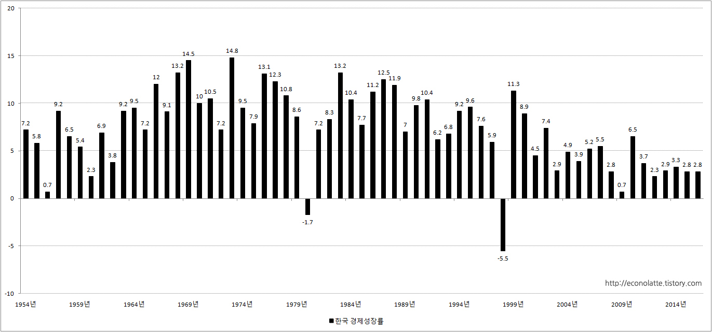
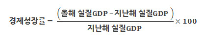
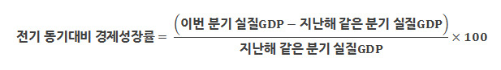
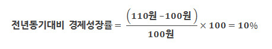
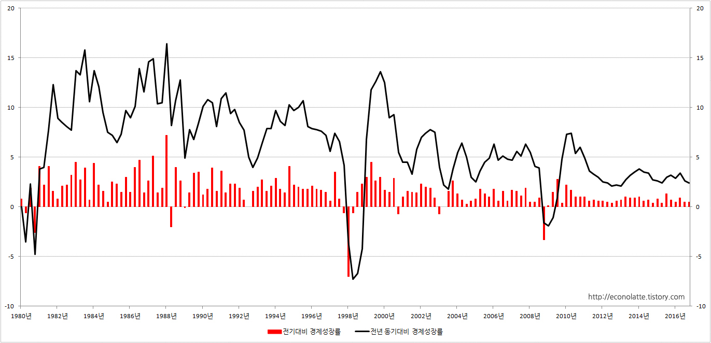

■ 경제성장률
1.경제성장률
경제(經濟)는 베틀을 본 뜬 경(經)자와 보리를 본 뜬 제(濟)자로 이루어진 단어입니다. 여기서 베틀을 본 뜬 경(經)은 옷을 상징하고, 보리를 본 뜬 제(濟)는 음식을 상징합니다. 우리가 흔히 여유로운 삶을 상징할 때 하는 말 ‘배 부르고 떼갈 좋은 옷을 입는 삶’이 글자로 탄생한 것이 바로 경제입니다. 즉, 경제는 ‘물질적 부’를 향한 사람들의 염원이 만들어 낸 단어라고 할 수 있습니다.
그렇다면 경제성장률이란 무엇일까요? 경제성장률이란 경제, 즉 한 나라의 '물질적 부'가 얼마나 증가했는지 조사를 한 것입니다. 예를 들어 2017년 경제성장률이 3%라면 대한민국에서 생산된 물질적 부가 2016년 보다 3% 늘어났다는 이야기가 됩니다.
※ 한국 경제성장률 (1954년 ~ 2016년)

{kind=link}
2.경제성장률 계산 공식
경제성장률을 계산하는 기본 공식은 다음과 같습니다.
{kind=link}
예를 들어 지난해 우리나라의 실질GDP가 100원이라고 합시다. 그리고 올해의 실질GDP가 110원이라면 경제성장률은 10%가 됩니다.

※ 전기대비 경제성장률
실질GDP는 1년에 4번 계산해서 한국은행이 발표합니다. 1월 ~ 3월 까지 생산한 물질적 부를 4월에 발표하고, 4월 ~ 6월 까지 생산한 물질적 부를 7월에 발표하는 시스템입니다.
그렇다면 전기대비 경제성장률은 무엇일까요? 전기대비 경제성장률을 구하는 공식은 다음과 같습니다.
{kind=link}
예를 들어 1분기, 즉 1월 ~ 3월의 실질GDP가 100원이라고 합시다. 그리고 2분기, 즉 4월 ~ 6월의 실질GDP가 110원이라면 전기대비 경제성장률은 10%가 됩니다.
{kind=link}
※ 전년 동기대비 경제성장률
전년 동기대비 경제성장률은 지난해 같은 기간에 비해 물질적 부가 얼마나 증가했는지 계산을 한 것입니다. 전년 동기대비 경제성장률을 계산하는 공식은 다음과 같습니다.
{kind=link}
예를 들어 지난해 1분기, 즉 1월 ~ 3월의 실질GDP가 100원이라고 합시다. 그리고 올해 1분기의 실질GDP가 110원이라면 전년 동기대비 경제성장률은 10%가 됩니다.
{kind=link}
※ 한국 경제성장률(전기대비 성장률, 전년동기대비 성장률)

{kind=link}
3. 경제성장률 조회 방법
경제성장률은 한국은행 경제통계시스템에서 아래의 순서대로 찾아가면 조회할 수 있습니다.
■ 한국은행 경제통계 시스템 → 10.국민계정 → 10.1. 주요지표 → 10.1.2 분기지표